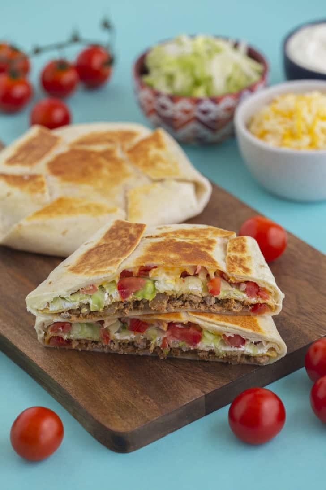

Crunchwrap recipe

Homepage
Ingredients:
- 5 lbs (2.25 Kg) beef
- 1 Whole white onion
- 2 whole red tomatos
- 1 Head of Iceberg lettuce
- 1 Stick of salted butter (5 Tbsp)
- 8oz of your favorite shredded cheese
- 20 large tortillas
- 20 Small Tortillas
Equipment:
- Deepdish pan or Pot
- Cuttingboard
- Sharp Knife
- Extra small pan
Steps
- Start by preparing the veggies. Dice tomatos in to quarter or half inch cubes.
Dice onion into wharter inch segments. Finally slice the head of lettace into small bits (not minced but small enough to sprinkle in)
- After dicing your veggies bring your pot/deepdish pan to a med-high heat and start browning your meat.
Season as you perfer. Its reccomended to use a mexican/taco seasoning.
- After the meat is done browning pull it off the heat and lower the heat to a medium-low heat. Place quarter inch slice of butter into the pan and give it a good swirl to cover the pan.
- Now lay down one large tortilla and scoop 3-4 spoonfuls of the beef onto the center of the tortilla.
sprinkle some cheese and a bit of each of the veggies on top of the beef.
- Now place a small tortilla on top of the big one in the center and start to fold the edges inward.
- You can do this one by one or a few at a time. After finishing the start of your crunchwraps you dont want them to fall apart.
Now we are going to place the crunchwraps folded side down into the pan to let the tortillas brown and then flip them. Have a
plate ready for when they come off of the pan. It should only take about 10-15 seconds to brown
- Rinse the ban of the old burnt butter as nessecary